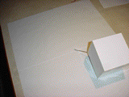

Rolling Skewered Cube
Simulator of a cube with an axle skewered through it.
Launch the simulator →Original problem was a cube with an axle through opposite vertices.

When one end of the protruding axle is fixed to a point on the flat surface, the cube's motion is confined to tracing out 'petals'.
The simulator allows for Vertex-Vertex, Edge-Edge, and Face-Face skewering of the cube.